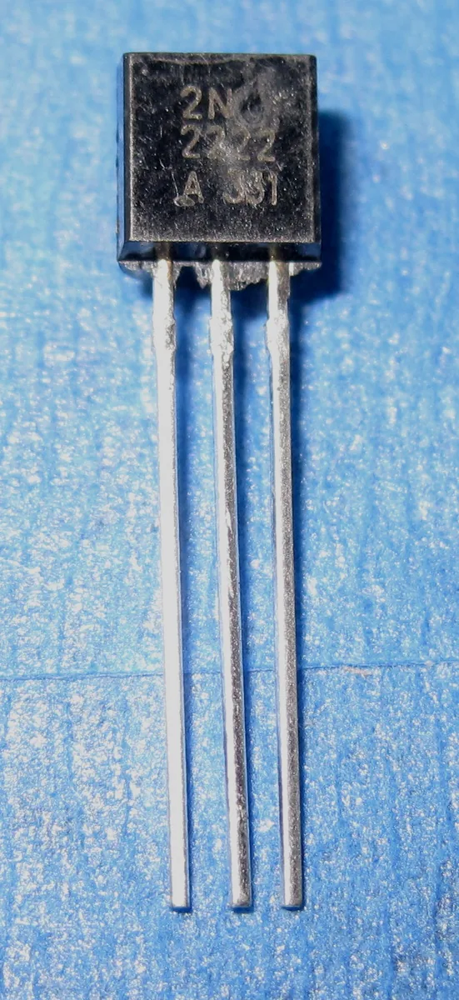
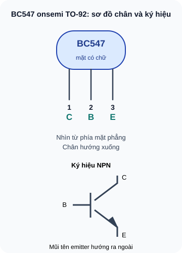
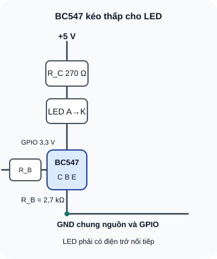

Transistor BJT — NPN & PNP
Linh kiện 3 chân kiểm soát dòng lớn bằng dòng nhỏ — nền tảng của mọi mạch khuếch đại và công tắc điện tử.
- Hiểu BJT là gì và tại sao nó khuếch đại được dòng điện
- Phân biệt NPN và PNP — cách hoạt động và chiều dòng
- Xác định 3 chân: Base (B), Collector (C), Emitter (E)
- Hiểu 3 vùng hoạt động: Cutoff, Active, Saturation
- Hiểu hệ số khuếch đại dòng hFE (β)
- Phân biệt transistor dùng làm switch vs khuếch đại
- Nhận biết BC547, BC337, BC557 — đọc datasheet cơ bản
- Đo và kiểm tra transistor bằng multimeter

Dụng cụ
| Tên | Thông số | SL |
|---|---|---|
| Transistor NPN BC547 | 45V, 100mA — signal transistor phổ biến nhất | 3 |
| Transistor NPN BC337 | 45V, 800mA — driver cho relay, motor nhỏ | 2 |
| Transistor PNP BC557 | 45V, 100mA — PNP tương đương BC547 | 2 |
| Điện trở 1kΩ, 10kΩ, 100kΩ | ¼W | 5 mỗi loại |
| LED đỏ + điện trở 270Ω, 470Ω và 2,7kΩ | 270Ω dùng trong ví dụ tính 10mA; 470Ω dùng khi thực hành dòng thấp hơn; 2,7kΩ hạn dòng base | 2 mỗi loại |
| Nguồn 5V + breadboard + multimeter | — | 1 bộ |
1. Transistor BJT — Linh kiện "điều khiển dòng bằng dòng"
Transistor lưỡng cực (Bipolar Junction Transistor — BJT) là linh kiện bán dẫn có ba lớp vật liệu P-N xen kẽ nhau, tạo thành hai tiếp giáp P-N. Có hai cấu hình: NPN (N-P-N) và PNP (P-N-P). Ba chân của BJT:
- Base (B) — cực điều khiển, dòng vào đây điều khiển dòng lớn hơn
- Collector (C) — cực thu dòng lớn (từ nguồn VCC)
- Emitter (E) — cực phát dòng ra (thường nối về GND với NPN)
Nguyên lý cốt lõi: một dòng nhỏ vào Base (I_B, thường µA đến mA) điều khiển một dòng lớn hơn từ Collector sang Emitter (I_C, thường mA đến A). Đây là khuếch đại dòng — khác với điện trở chỉ hạn dòng, transistor thực sự "nhân" dòng lên.

Bản chữ của sơ đồ
Mặt phẳng có chữ hướng về bạn, chân đi xuống: C (1), B (2), E (3). Ký hiệu NPN có mũi tên tại emitter hướng ra ngoài. Thứ tự chân chỉ áp dụng cho đúng onsemi BC547 TO-92.
1.1 NPN vs PNP — Khác nhau ở chiều dòng
| Đặc tính | NPN (BC547, BC337) | PNP (BC557) |
|---|---|---|
| Cấu trúc | N-P-N (Emitter là N) | P-N-P (Emitter là P) |
| Dòng I_B | Vào Base (B→E) | Ra khỏi Base (E→B) |
| Dòng I_C | Vào Collector (C→E) | Ra Collector (E→C) |
| Điện áp V_BE | V_B > V_E (~0,6–0,7V) | V_B < V_E (~–0,6V so với E) |
| Phổ biến hơn | ✓ NPN thường dùng nhiều hơn | Dùng khi cần switch ở phía VCC |
| Ký ức đơn giản | NPN: "N"ot "P"ointing "N"orth (mũi tên E chỉ ra) | PNP: mũi tên E chỉ vào trong |
2. Ba vùng hoạt động của BJT
2.1 Vùng Cutoff — Transistor tắt hoàn toàn
Điều kiện: V_BE < 0,6V (tiếp giáp B-E không phân cực thuận)
Kết quả: I_B ≈ 0, I_C ≈ 0 → transistor như hở mạch giữa C và E → tải không có điện
Dùng khi: Transistor làm switch ở trạng thái "OFF"
2.2 Vùng Active — Transistor khuếch đại
Điều kiện: V_BE ≈ 0,6–0,7V (B-E phân cực thuận); V_CE > V_CE_sat (C-E chưa bão hòa)
Kết quả: I_C = hFE × I_B (hFE thường 100–300 với BC547)
Dùng khi: Khuếch đại tín hiệu analog (audio, cảm biến tương tự)
2.3 Vùng Saturation — Transistor bão hòa (ON hoàn toàn)
Điều kiện: I_B đủ lớn để I_C bị giới hạn bởi mạch ngoài (không còn tăng theo hFE × I_B nữa)
Kết quả: V_CE_sat ≈ 0,1–0,3V → transistor như ngắn mạch giữa C và E → tải nhận đầy điện áp
Dùng khi: Transistor làm switch ở trạng thái "ON" — điều khiển relay, LED, motor
Khi dùng BJT NPN làm switch kỹ thuật số (ON/OFF): cần cấp I_B = I_C_load / (hFE_min / 10) — tức là cấp dòng gấp 10 lần mức tối thiểu cần thiết để đảm bảo transistor vào bão hòa hoàn toàn. Đây gọi là "over-drive" hay "saturation overdrive". Nếu thiếu dòng Base, transistor chỉ vào active → V_CE cao → tổn thất nhiệt lớn và switch không hoạt động đúng.
3. Thiết kế mạch switch NPN — Điều khiển LED từ GPIO

Bản chữ của sơ đồ
Nhánh tải +5 V qua R_C 270 Ω, LED từ anode tới cathode, collector BC547, emitter về GND. Nhánh điều khiển GPIO 3,3 V qua R_B 2,7 kΩ vào base. Hai nguồn chung GND. Kiểm dòng GPIO và thông số LED trước khi lắp.
Ví dụ tính toán: Điều khiển LED 10mA từ GPIO 3,3V qua BC547 (hFE_min = 110)
Bước 1: Tính R_C (điện trở tải LED)
I_LED = 10 mA, V_LED = 2V, V_CE_sat = 0,2V
V_R_C = VCC – V_LED – V_CE_sat = 5 – 2 – 0,2 = 2,8V
R_C = 2,8V / 0,01A = 280Ω → chọn 270Ω
Bước 2: Tính I_B cần thiết (overdrive 10×)
I_B_min = I_C / hFE_min = 0,01 / 110 = 0,091 mA
I_B_target = I_B_min × 10 = 0,91 mA ≈ 1 mA
Bước 3: Tính R_B
V_GPIO = 3,3V, V_BE = 0,7V
R_B = (V_GPIO – V_BE) / I_B_target = (3,3 – 0,7) / 0,001 = 2,6V / 0,001 = 2,600Ω → chọn 2,7kΩ
4. Thực hành: Đo transistor và lắp mạch switch LED
Chế độ Diode test: đo V_BE của BC547. Que đỏ vào B, que đen vào E: kỳ vọng ~0,6–0,7V.
Đo V_BC: que đỏ vào B, que đen vào C: kỳ vọng ~0,5–0,7V.
Đo V_CE: que đỏ vào C, que đen vào E: kỳ vọng OL (hở mạch khi không phân cực Base).
Nếu multimeter có chức năng hFE: cắm transistor vào khe đo, đọc hFE. Kỳ vọng BC547: 110–800.
Lắp nhánh tải: +5V → R_C(470Ω) → anode LED → cathode LED → Collector BC547. Emitter → GND chung. Xác nhận chân BC547 theo datasheet của linh kiện đang có.
Nối R_B(2,7kΩ) từ Base, đầu còn lại nối GND để mô phỏng GPIO LOW; không để Base trôi nổi. LED phải tắt.
Chuyển đầu R_B sang nguồn 3,3V có GND chung: LED sáng (transistor ON). Không nối Base trực tiếp vào nguồn.
Đo V_CE khi LED sáng: kỳ vọng V_CE_sat < 0,3V → transistor bão hòa.
Đo V_CE khi LED tắt: kỳ vọng ≈ VCC (5V) → transistor ngắt hoàn toàn.
1: Relay thay R_C (không cần R_C tính, relay tự hạn dòng). I_C = 50mA. I_B_target = I_C/(hFE_min/10) = 0,05/(100/10) = 0,05/10 = 5mA. R_B = (5–0,7)/0,005 = 4,3/0,005 = 860Ω → chọn 820Ω hoặc 1kΩ. Thêm freewheeling diode song song relay!
2: V_BE thuận + V_BC thuận + V_CE hở khi không phân cực → transistor NPN, còn tốt. (Với PNP, V_EB thuận và V_CB thuận — thứ tự đo khác)
3: I_C = 200 × 50µA = 10,000µA = 10mA. I_E = I_B + I_C = 50µA + 10mA = 10,05mA ≈ 10mA
4: R_B lớn → I_B = (V_in – 0,7)/R_B nhỏ → I_B không đủ để overdrive → transistor có thể chỉ vào vùng active thay vì saturation → V_CE > V_CE_sat → tổn thất nhiệt, switch không OFF-ON rõ ràng, relay có thể không đóng hoàn toàn.